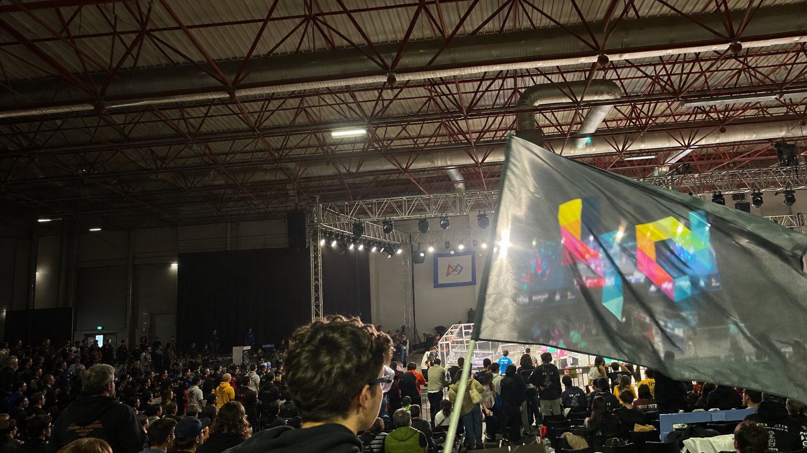
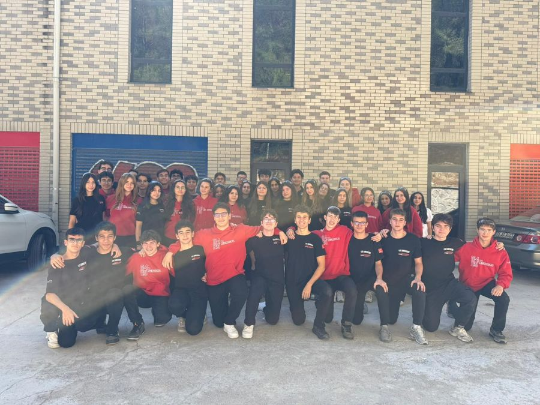
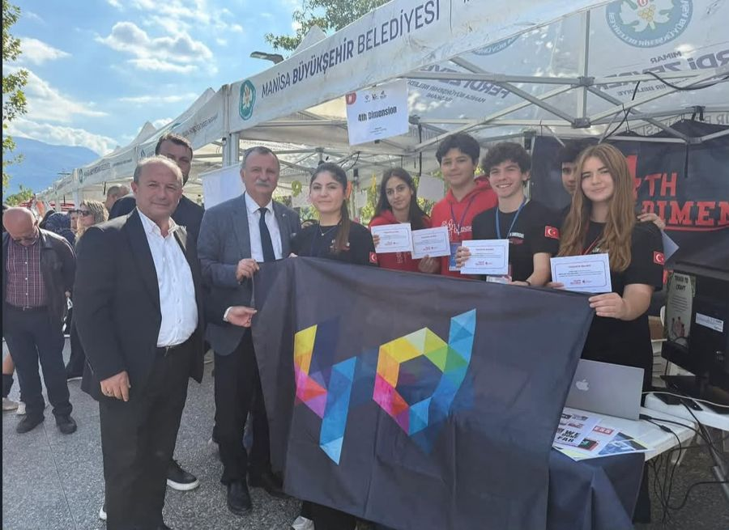
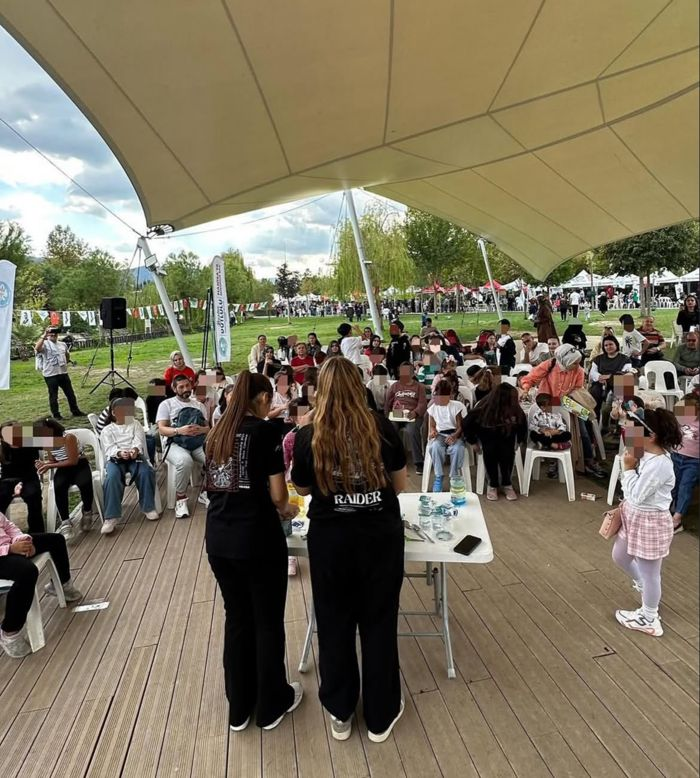

Okulların ve kurumların doğrudan kullanabileceği eğitim içerikleri.
FRC 6429 4th Dimension takımı tarafından hazırlanan sunumlar, yapım kitapçıkları, deney videoları ve açık kaynak çizimler. İndir, sınıfında veya kurumunda kullan.
Kütüphane
7 modül
3Aç
Endüstriyel Üretim ve Montaj
Bir fikir nasıl parça olur, parçalar nasıl ürüne dönüşür? Sonra iki modeli kendin kur.
5Aç
NeuroBridge
Öğrenme güçlüğü yaşayan ve nöroçeşitli çocuklar için, oyunla algoritma ve kodlama mantığı.
Eşleşen modül yok. Aramayı veya filtreyi değiştir.
Robot yapan bir takımdan, herkese açık eğitim.
4th Dimension, İzmir'den bir FIRST Robotics takımı. Robotik çalışmalarının yanında okullara, çocuklara ve ailelere yönelik eğitim projeleri yürütüyoruz. Buradaki içerikler bu çalışmalardan çıkıyor ve ücretsiz.


